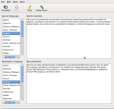

GNOME Translate
Dieser Artikel wurde für die folgenden Ubuntu-Versionen getestet:
Ubuntu 16.04 Xenial Xerus
Ubuntu 14.04 Trusty Tahr
Zum Verständnis dieses Artikels sind folgende Seiten hilfreich:
Für Linux gibt es verschiedene Werkzeuge zur maschinellen Übersetzung von Texten. Nachfolgend wird der Einsatz von GNOME Translate  beschrieben, ein kleines grafisches Programm zur Übersetzung einzelner Textpassagen oder ganzer Textdateien. Es greift dafür auf Online-Dienste wie Babel Fish oder SYSTRAN zurück.
beschrieben, ein kleines grafisches Programm zur Übersetzung einzelner Textpassagen oder ganzer Textdateien. Es greift dafür auf Online-Dienste wie Babel Fish oder SYSTRAN zurück.
Das Projekt ist inzwischen in die Jahre gekommen und richtet sich nicht an professionelle Übersetzer.
Installation¶
 Zur Verwendung wird einfach das folgende Paket installiert [1]:
Zur Verwendung wird einfach das folgende Paket installiert [1]:
gnome-translate (universe)
 mit apturl
mit apturl
Paketliste zum Kopieren:
sudo apt-get install gnome-translate
sudo aptitude install gnome-translate
Bedienung¶
 Das Programm lässt sich bei Ubuntu-Varianten mit einem Anwendungsmenü über den Eintrag "Zubehör -> Language Translator" aufrufen [2] oder mit dem Befehl:
gnome-translate
aus einem Terminal [3] starten. Die zugrundeliegende Bibliothek libtranslate kann auch ohne grafische Oberfläche verwendet werden. Das kann mit folgendem Befehl getestet werden:
echo "Hallo Welt!" | translate -f de -t en
Übersetzen von Text¶
Sobald man das Programm gestartet hat, wählt man zuerst die Quell- und die Zielsprache aus. Danach gibt man in das obere Textfeld den zu übersetzenden Text ein und drückt Strg + T . Nun erscheint im unteren Textfeld der übersetzte Text.
Übersetzung von Webseiten¶
Hinweis:
Diese Funktion ist nicht mehr nutzbar.
Um eine Webseite zu übersetzen, klickt man auf "File -> Translate Web Page...".
Nun gibt man wieder die Quell- und dann die Zielsprache an, dann im Textfeld darunter die Internet-Adresse eingeben und auf "Translate" klicken. Die Website wird übersetzt und im Standardbrowser angezeigt.
 Blogbeitrag, 05/2009
Blogbeitrag, 05/2009 Übersichtsartikel
Übersichtsartikel- Erstellt mit Inyoka
-
 2004 – 2017 ubuntuusers.de • Einige Rechte vorbehalten
2004 – 2017 ubuntuusers.de • Einige Rechte vorbehalten
Lizenz • Kontakt • Datenschutz • Impressum • Serverstatus -
Serverhousing gespendet von